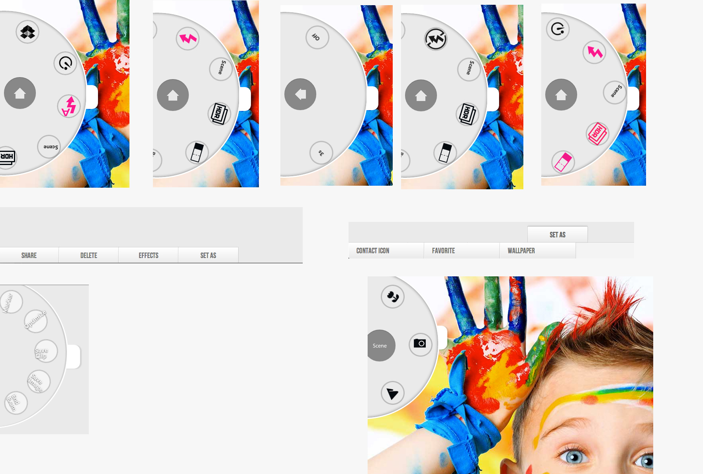
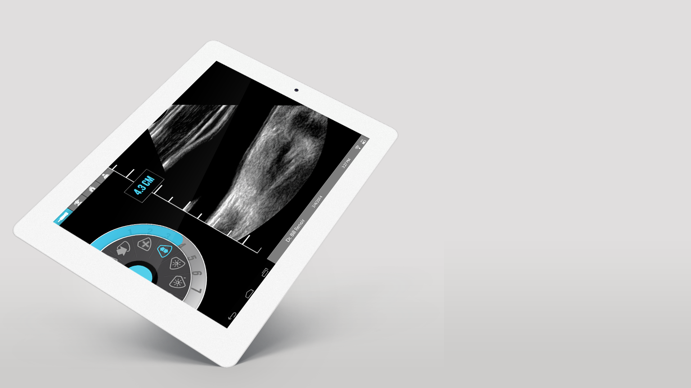

iViz SonoSite.
Full-stack UX Design
Think TRICORDER on StarTrek
- UX Design
- Interaction Design
- UI Prototyping
The problem you are trying to solve
Prototyped a handheld ultrasound device for military and medical professionals. Think of it as something along the lines of Star Trek's Tricorder. This was my favorite project of 2013.
I was contracted to assist with the "Experience Team," a multidisciplinary team of industrial designers, interaction designers, human factors, mechanical engineers, and a software engineer who occupied the "Brand Studio" and conducted UX studies, gathering data during the exploration of a new product. I was responsible for producing touch interface prototypes on an iPad Mini using HTML5, CSS3, and JavaScript.
For the first time I wasn't working in web and I loved it! Working alongside industrial designers was a breath of fresh air in UX and allowed me to re-imagine my contribution in terms of my skill set and how they could be leveraged to solve problems outside of the web for the screen. During the interview they told me that a 7" screen would be created in-house on Android. Since it was simply a touch screen based UI design I chose the iPad Mini to prototype and start getting feedback from users.
In order to conduct AB tests we needed to test users against a variety of interfaces to determine if our thoughts were even valid based on accrued data. We used an outside agency to bring in a panel of users for out tests as well as used a pool of power users who use our devices in their day-to-day.
In order to conduct AB tests we needed to test users against a variety of interfaces to determine if our thoughts were even valid based on accrued data. Determining that the device would be held in one hand isolated the target areas on the touch screen to the areas that are the "hot spots". Since a user would be holding the transducer with one hand they would need a way to navigate the menu the most efficient way possible with their other hand. Feeling the most natural movement was in the form of the radial movement of the thumb allowing for the most grip to be held on the device whilst navigating identified that a wheel interface may be the best solution, especially to reduce potential contams. I had a vision for my UI.
Additional controls would extend
from the wheel as necessary. I
developed the prototype of the wheel
interface and the scan module in
HTML/CSS3/JS to AB test
users against traditional random
access flyout/dropdown/accordion
style navigation menus. The test
groups were given a familiar
interface, a digital camera wheel,
to navigate and select options.
Users were asked simple questions
such as "Turn off the Flash" and
"Change the shutter speed" while the
UX team observed their findings from
how they held the device to any
impediments that could be
identified. Users unanimously
preferred to navigate the wheel
interface. Further tests against
actual users were administered
asking them to perform the
functions, as they would expect them
in order to carry out their
explanations with the prototype.



{kind=link}
{kind=link}
The following prototype was built for use with Google Chrome with the developer tools opened in emulator mode with touch emulations enabled. View it in Chrome as iPad Mini. You have to have the settings correct in order to properly spin the wheel navigation. It was designed to compliment the way people hold their devices so that they can navigate the screens and operate the controls with their thumb in the regions that are highly favorable for touch.